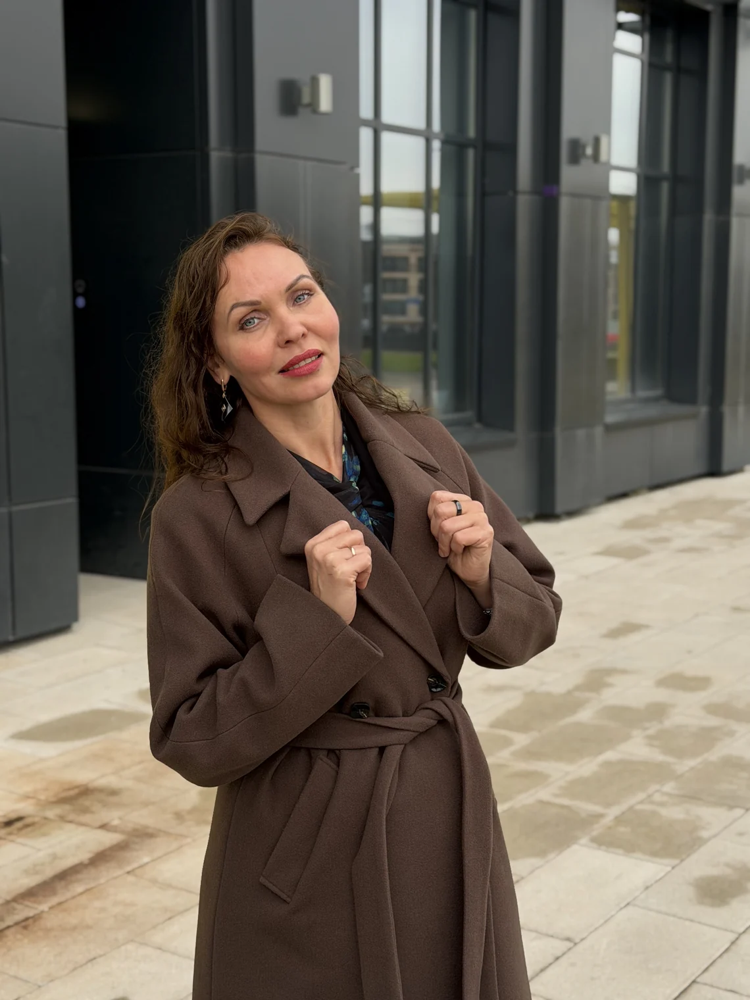
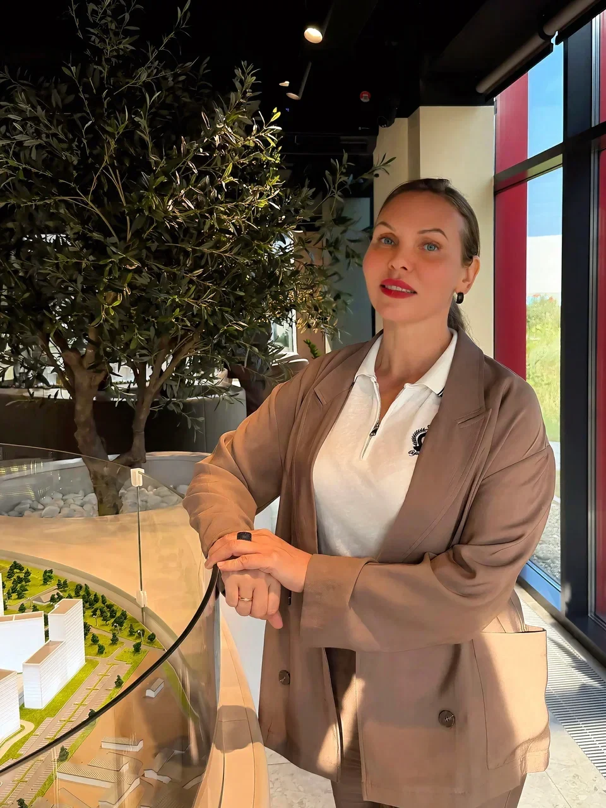

Подбор новостроек
Помогу выбрать квартиру в новостройке, разобраться с ипотекой и пройти путь от первого просмотра до сделки.
Как проходит подбор

Знакомство
Начинаю с разговора о том, как вы хотите жить. Так мы поймём, какой район, планировка и бюджет подойдут именно вам.
Сравним новостройки по району, планировкам и условиям покупки. Выберем, какие стоит посмотреть.
Разберём первоначальный взнос, срок и ежемесячный платёж, чтобы понять, какая нагрузка вам подходит.
Объясню, какие документы понадобятся и что будет происходить на каждом этапе покупки.